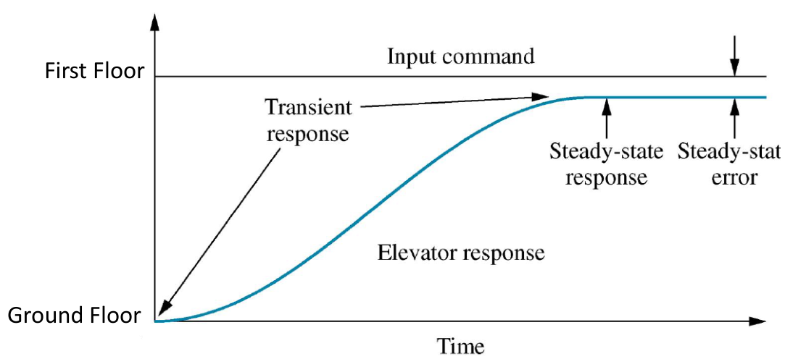
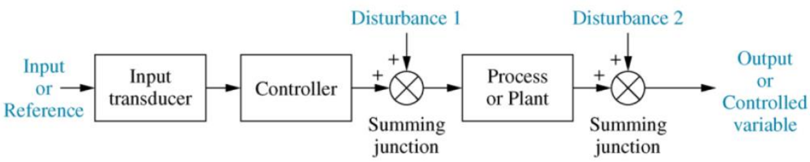
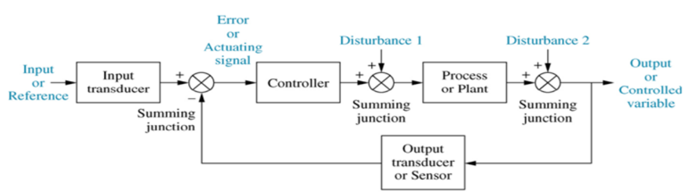

Introduction
So what is control?
- Control is about achieving a desired and predictable system response to some input stimulus.
- Not necessarily the fastest response!
Elevator Control Example
-
How quickly would you like to get to the First floor?

-
To control the elevator we need to have control over:
-
The Transient Response Time
-
The steady-state error
-
Any disturbances (How many passengers)
-
If the response time is too slow people get impatient, too fast and people/equipment gets damaged
-
If there is some error the floor of the lift will not be in line with the exit floor, passenger might not feel safe. • How should the elevator respond when empty/full of passengers?
-
Control Strategies
Open Loop Control
-
No feedback loop.
-
Input has no knowledge of what is going on at the output. • Disturbances cannot be corrected.

-
Open Loop Control Examples
-
Domestic appliances: Toaster, microwave, washing machine, oven, vacuum cleaner
-
Industrial applications: Irrigation systems, extractor fan, manual valve control
-
Advantages
- Cheap to manufacture
- Good enough in many cases.
-
Disadvantages
- Accuracy
- Repeatability
- Response time cannot be controlled
- No disturbance rejection
-
Closed Loop Control
-
Feedback loop, input has knowledge of what is going on at the output
-
Disturbances can now be corrected.

-
Closed Loop Control Examples
- Car cruise control, anti-lock braking system, domestic heating system, mobile phone power modulation, altitude control etc
- Industrial applications: Temperature, pressure, flow, level, velocity, position etc
-
Advantages
- Very accurate
- Repeatability of process
- Response time and error can be controlled
- Disturbance rejection
-
Disadvantages
- Cost
- If designed incorrectly can become unstable